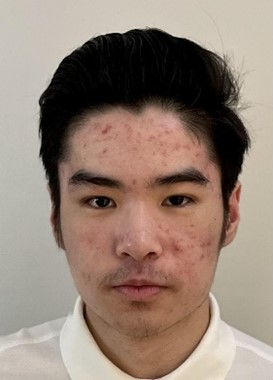

Name: Adrian Chew
Student number: s3942506
Nationality: I was born in Kuala Lumpur Malaysia and moved to Australia at the age of 3 years old.
Culture: My family tends to follow Chinese traditions such as the tossing of food during the Lunar new year for good luck.
Education: I have completed primary school and high school before entering this course.
Languages spoken: I mainly speak English because I moved here at such a young age but I am able to understand some Cantonese as my family tends to communicate using Cantonese.
Interesting fact: I have always been fascinated by the field of bodybuilding, powerlifting and strongman as I looked up to the people who were seen as representing these fields. I’ve looked up to people such as Arnold Schwarzenegger for bodybuilding, Larry Wheels for powerlifting and Hafþór Björnsson for strongman. As a result, I have also taken up the hobby of weightlifting three years ago to strive to get even close to their physique. While most people would go to the gym to exercise, I prefer to work out at home with my own equipment.
W3schools.com. 2022. HTML Tutorial. [online] Available at: